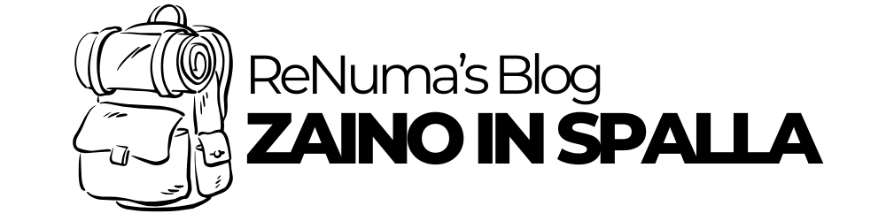

Le mie vacanze zaino in spalla stanno per iniziare: Interrail e Via degli Dei
Quest'anno ho deciso di fare qualcosa di diverso. Ho scelto la lentezza, lo zaino in spalla e tanta voglia di scoperta. Due viaggi che parlano di libertà: l'Interrail in Europa centrale e del Nord e il Cammino degli Dei tra Bologna e Firenze.
Interrail: il mio itinerario europeo
Quest'estate partirò per un viaggio in treno che attraverserà mezza Europa, tra rotaie e zaino in spalla. Queste le città che visiterò:
- Austria: Salisburgo
- Germania: Monaco di Baviera, Stoccarda, Norimberga, Francoforte, Brema, Amburgo
- Lussemburgo: Lussemburgo
- Belgio: Dinant, Bruxelles, Gand, Bruges, Anversa
- Paesi Bassi: Rotterdam, L'Aia, Amsterdam
- Polonia: Danzica, Varsavia, Cracovia
Non vorrei programmare tutto nei minimi dettagli, ma l'istinto da pianificatore e le difficoltà di trovare soluzioni last minute ad agosto rendono difficile lasciare tutto al caso. Cercherò comunque di mantenere una certa flessibilità, per potermi godere ogni tappa senza l'ansia dell'incastro perfetto.
Cammino degli Dei: il ritorno alla semplicità
Prima però, mi aspetta un altro tipo di viaggio: il Cammino degli Dei, un trekking di circa 130 km tra Bologna e Firenze. 4 giorni a piedi, attraversando l'Appennino Tosco-Emiliano, con scarpe da trekking al posto della tastiera. Per me sarà:
- Una pausa rigenerante dalla routine quotidiana
- Un modo per rallentare e riconnettermi con la natura
- Un piccolo test personale, lontano dal comfort
Perché lo zaino in spalla?
Perché:
- Voglio muovermi leggero, senza troppe cose né troppe aspettative
- Voglio vivere ogni tappa, ogni chilometro, ogni scorcio
Non sarà solo una vacanza, ma un modo per ricaricarmi, riflettere, e tornare con nuove idee e prospettive.
Cosa condividerò sul blog
Dopo il viaggio pubblicherò:
- Le tappe più belle e sorprendenti
- Consigli pratici per chi vuole fare Interrail o un cammino a piedi
- Qualche riflessione personale su cosa mi ha lasciato questa esperienza